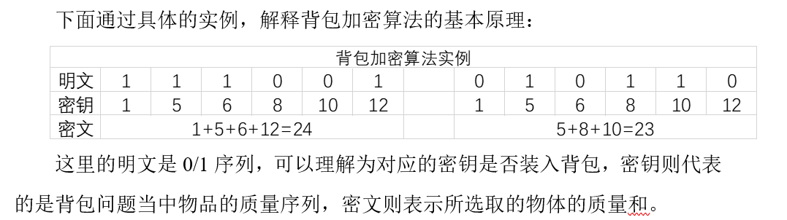
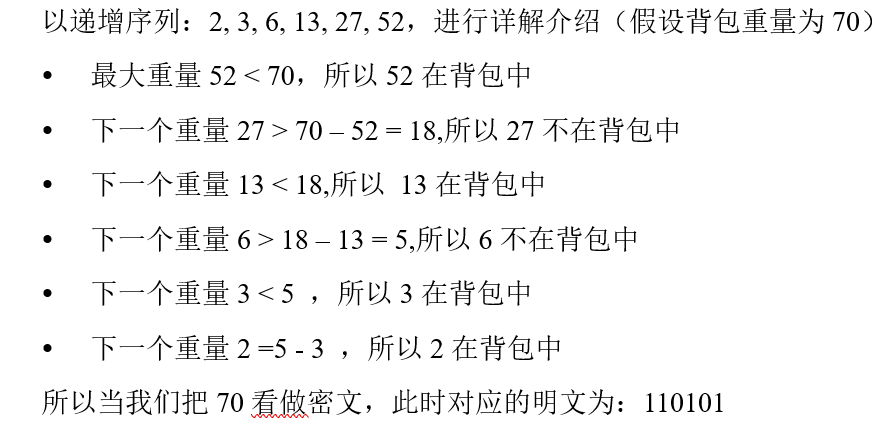
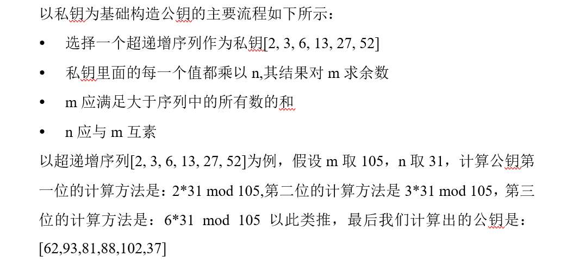
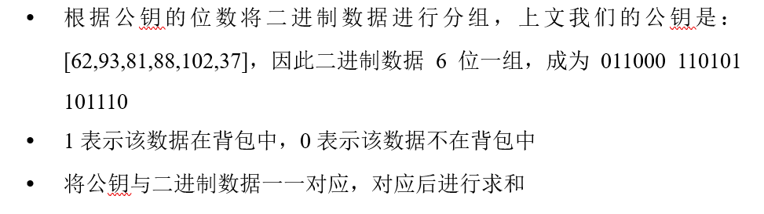
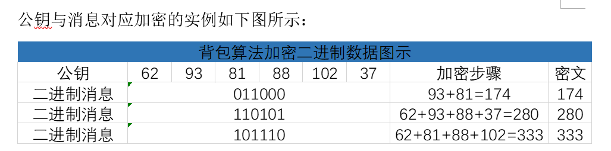
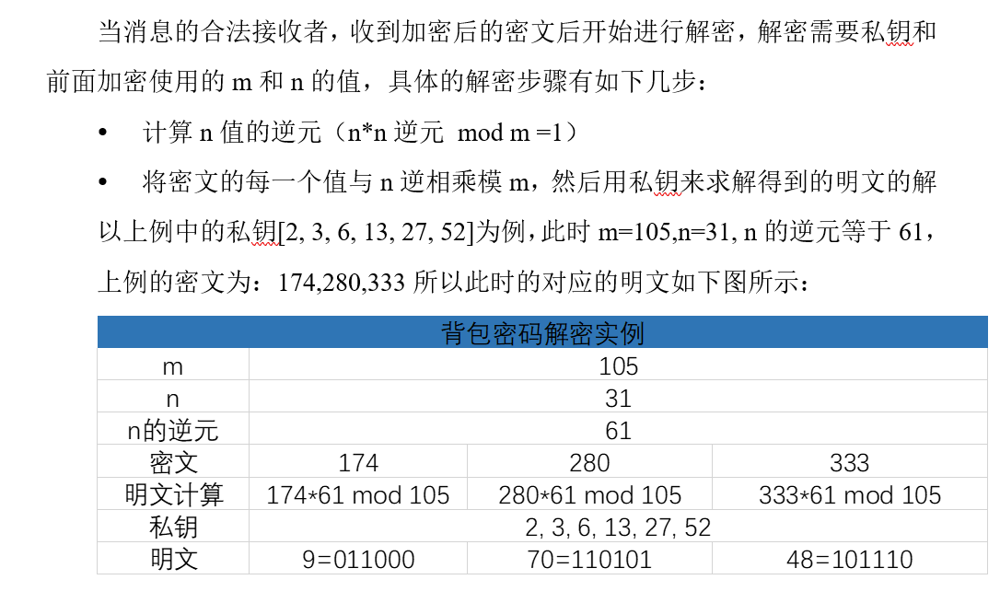
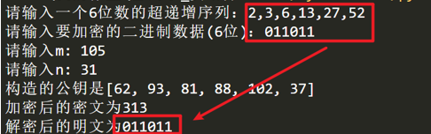

转自：https://blog.csdn.net/sinat_41696687/article/details/111696108
一、背包密码体制介绍
提到背包密码体制，我们首先就想到为什么这个密码体制和背包有什么关系，背包二字的由来是因为在1978年 Merkle 与 Hellman 提出的 MH 背包问题，这个问题的总体思路是这样的，现在有许多不同重量的物体，从中可以任意选择 n 件物品放入背包。披露背包中物品的总重量和物品堆；但是所选项目的类型不是公开的。针对这种问题 Merkle 与 Hellman 合作设计了一种使用背包问题对信息进行加密的方法，因为该加密算法涉及到背包问题，所以背包密码因此得名。
二、背包加密算法原理
背包加密算法的总体思路是这样的，假如A想发送一条信息，A首先要具有私钥，并且该密钥是通过背包问题传递的，该私钥可以生产一个公钥，发送消息之前必须先使用公钥进行加密，消息的合法接收者使用私钥等已知信息进行解密，这就是背包加密算法的总体思路。

三、背包加密算法步骤
3.1 构造递增序列背包
在背包问题当中，若物品的重量列表是一个超递增序列，这个问题是很容易的出答案的，解决超递增序列的背包问题主要有以下几个步骤：假如有一个背包，背包的重量已知，将这个背包的重量与我们已知的超递增序列中的最大值进行比较，如果背包的重量小于这个数，那么这个数不在背包中，如果重量大于或等于这个数，那么这个数在背包中，用背包的重量减去这个数，得出的结果继续与序列中的下一个数进行比较，重复比较直到比较完为止。如果背包的总重量减到0则该背包问题得出解，反之则无解。 
3.2 以私钥为基础构造公钥

3.3 使用公钥进行加密
通过以私钥为基础构造公钥，此时当我们拿到公钥的时候，我们开始使用公钥进行加密数据，假如我们拿到一个二进制的数据011000110101101110，背包加密算法对该二进制数据加密的主要流程是：


3.4 解密

四、背包密码体制Python实现
4.1 以私钥构造公钥
def create_pubkey(data):
# 构造m 此时m应大于超递增序列的所有和
# m = sum(data) + 2
# m = 250
m = int(input("请输入m: "))
# 构造n 这里的n应当与m互素，这里先取值为31
# n = 31
# n = 113
n = int(input("请输入n: "))
# 将序列中的每一个值都乘以n
for i in range(len(data)):
data[i] = data[i] * n
# 序列中的每一个值都对m求余
for j in range(len(data)):
data[j] = data[j] % m
print("构造的公钥是{} ".format(data))
return data,m,n
4.2 实用背包密码算法加密
# 核心代码
# 将二进制数据进行加密
def encryp(clear_txt,pubkey):
# 定义 密文列表
cipher_list = []
for i in range(len(clear_txt)):
if clear_txt[i] == 1:
cipher_list.append(clear_txt[i] * pubkey[i])
# 密文的值
cipher = sum(cipher_list)
print("加密后的密文为{}".format(cipher))
return cipher
4.3 解密
# 将加密后的数据进行解密
def decryption(cipher,input_list,m,inv_n):
# 私钥序列和
sumx = 0
# for i in cipher:
sumx = (inv_n * cipher) % m
# for k in range(len(input_list)):
result_list = []
clear_list = []
for s in range(0,7):
for p in itertools.combinations(input_list,s):
if sum(list(p)) == sumx:
result_list = list(p)
# print(result_list)
for l in input_list:
if l in result_list:
clear_list.append(1)
else:
clear_list.append(0)
result_str = ''
for t in clear_list:
result_str = result_str + str(t)
print("解密后的明文为{}".format(result_str))
return True
4.4 实现截图
我们输入一个超递增序列：[2,3,6,13,27,52],m取105，n取31，输入的m必须满足大于超递增序列的和，n必须与m互素，在进行试验的时候出现了一个错误困扰了很久，后来才发现原来超递增序列其实也是有要求的，那就是每一个元素的选取必须大于前面所有元素之和，这样的序列才是超递增序列，然后我们输入明文数据：011011，输出加密后的密文为313，公钥为[62, 93, 81, 88, 102, 37]，机密后的明文为011011，具体截图请见下图。 
五、代码实现
import itertools
import copy
# 从私钥构造公钥
def create_pubkey(data):
# 构造m 此时m应大于超递增序列的所有和
# m = sum(data) + 2
# m = 250
m = int(input("请输入m: "))
# 构造n 这里的n应当与m互素，这里先取值为31
# n = 31
# n = 113
n = int(input("请输入n: "))
# 将序列中的每一个值都乘以n
for i in range(len(data)):
data[i] = data[i] * n
# 序列中的每一个值都对m求余
for j in range(len(data)):
data[j] = data[j] % m
print("构造的公钥是{} ".format(data))
return data, m, n
# 将二进制数据进行加密
def encryp(clear_txt, pubkey):
# 定义 密文列表
cipher_list = []
for i in range(len(clear_txt)):
if clear_txt[i] == 1:
cipher_list.append(clear_txt[i] * pubkey[i])
# 密文的值
cipher = sum(cipher_list)
print("加密后的密文为{}".format(cipher))
return cipher
# 将加密后的数据进行解密
def decryption(cipher, input_list, m, inv_n):
# 私钥序列和
sumx = 0
# for i in cipher:
sumx = (inv_n * cipher) % m
# for k in range(len(input_list)):
result_list = []
clear_list = []
for s in range(0, 7):
for p in itertools.combinations(input_list, s):
if sum(list(p)) == sumx:
result_list = list(p)
# print(result_list)
for l in input_list:
if l in result_list:
clear_list.append(1)
else:
clear_list.append(0)
result_str = ''
for t in clear_list:
result_str = result_str + str(t)
print("解密后的明文为{}".format(result_str))
return True
# 下面两个函数是用来求乘法逆元的
def EX_GCD(a, b, arr): # 扩展欧几里得
if b == 0:
arr[0] = 1
arr[1] = 0
return a
g = EX_GCD(b, a % b, arr)
t = arr[0]
arr[0] = arr[1]
arr[1] = t - int(a / b) * arr[1]
return g
def ModReverse(a, n): # ax=1(mod n) 求a模n的乘法逆x
arr = [0, 1, ]
gcd = EX_GCD(a, n, arr)
if gcd == 1:
return (arr[0] % n + n) % n
else:
return -1
if __name__ == "__main__":
# 将函数生成的超递增序列进行赋值
input_list = eval('[' + input("请输入一个6位数的超递增序列：") + ']')
clear_txt = list(input("请输入要加密的二进制数据(6位)："))
for t in range(len(clear_txt)):
clear_txt[t] = int(clear_txt[t])
my_key = copy.deepcopy(input_list)
pubkey, m, n = create_pubkey(input_list)
cipher = encryp(clear_txt, pubkey)
# print(n,'模',m,'的乘法逆：',ModReverse(n,m))
# n的逆元
inv_n = ModReverse(n, m)
decryption(cipher, my_key, m, inv_n)